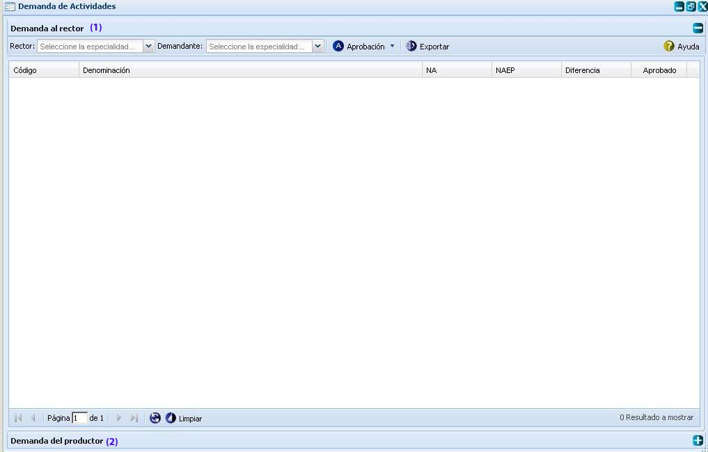
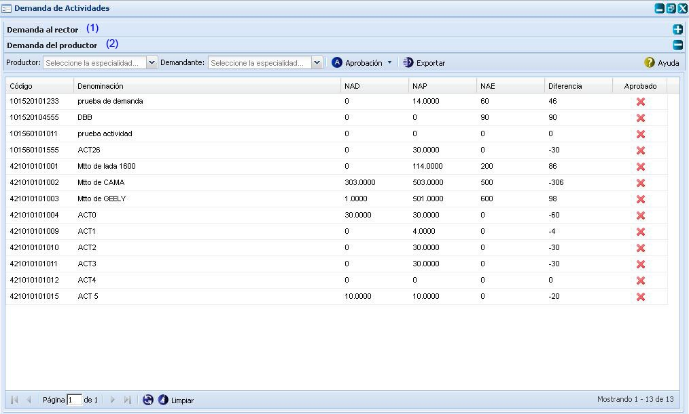
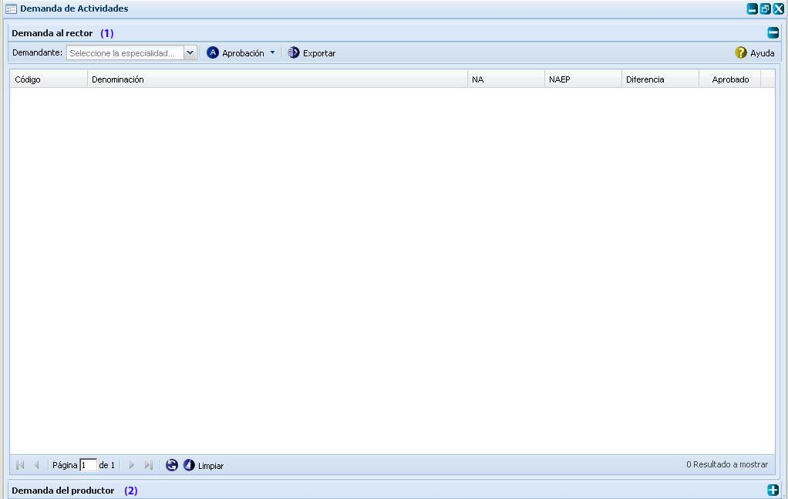
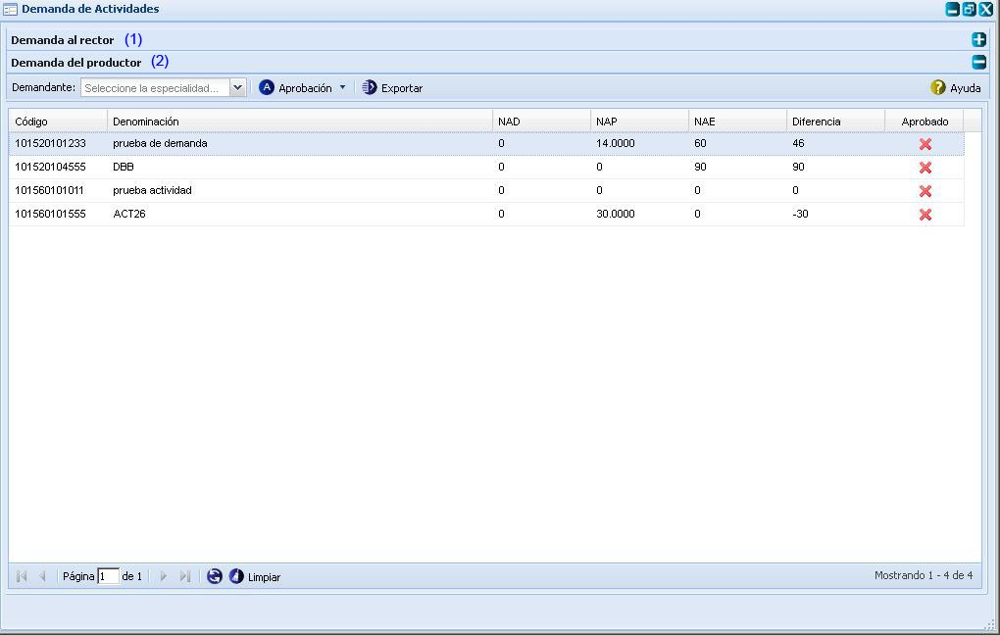
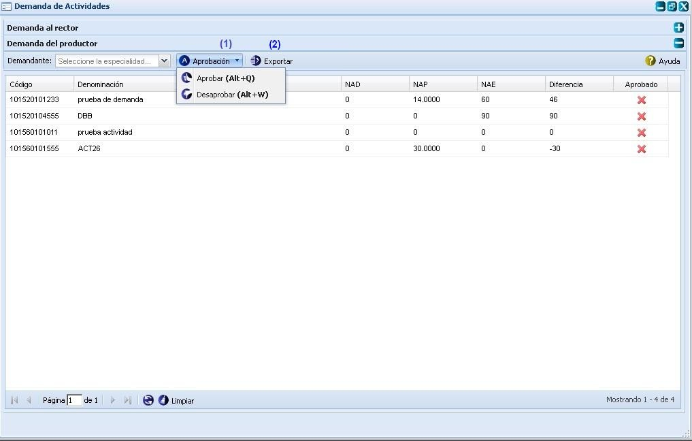

--Demanda de actividades--
Esta funcionalidad permite listar las actividades con los niveles que le son demandados a determinada especialidad productora, además de los niveles propios que la misma le inserta a cada una de sus actividades y con estos elementos le proporciona a la especialidad productora saber cuánto puede o no cubrir de lo solicitado, después de realizado este proceso el rector de la actividad distribuye los niveles que la especialidad productora puede ejecutar de la demanda por entidad y finalmente lo aprueba. Para acceder a esta funcionalidad se selecciona Planificación material/Bases para el plan/Demanda de actividades.
Una vez seleccionada esta funcionalidad, se mostrará en pantalla la interfaz de la misma, donde el usuario podrá realizar todas las acciones a las que tenga acceso, ver Figura 1. Las operaciones que se pueden realizar con esta funcionalidad están señaladas con números mostrándose el orden y la posición que ocupa cada una de las acciones que se ejecutan.

Figura 1. Interfaz Demanda de actividades.
La interfaz principal para realizar Demanda de actividades está dividida en dos secciones principales:
- Demanda al rector, opción (1).
- Demanda del productor, opción (2).
Estas dos secciones cargan las interfaces en dependencia del usuario que este autenticado si es:
- Usuario de Órgano Rector: en la interfaz Demanda al rector independientemente del campo de selección Demandante que se muestra siempre para cualquier usuario autenticado, se carga el campo de selección Rector, ver Figura 2. Lo mismo pasa para la interfaz Demanda del productor a parte del campo de selección Demandante que se muestra siempre para cualquier usuario autenticado, se carga el campo de selección Productor, ver Figura 3.

Figura 2. Interfaz Demanda al rector.

Figura 3. Interfaz Demanda del productor.
- Usuario Productor (Especialista): cuando se autentique un usuario productor (especialista) se muestra una interfaz listando todas las actividades que le demanden y las actividades de la cual la entidad sea rectora, por lo que en la interfaz Demanda al rector solamente se carga el campo de selección Demandante, ver Figura 4. Lo mismo pasa para la interfaz Demanda del productor se carga el campo de selección Demandante, ver Figura 5.

Figura 4. Interfaz Demanda al rector.

Figura 5. Interfaz Demanda del productor.
Si una entidad define en el componente Actividad que determinada actividad es compartida por otra(s) entidad(es), dicha actividad no aparece en el componente Demanda de actividades, ya que en este caso la(s) entidad(es) que compartan la actividad no necesitarán los recursos de la entidad que la creo para utilizarla.
Pasos para cubrir demanda de actividades
El procedimiento para cubrir determinada demanda de una o varias entidades es el siguiente:
- Se selecciona el panel Demanda del productor como se muestra en la figura 3.
- Se listan las actividades que son demandas por una o varias entidades mostrándose la información de la misma en las siguiente columnas Código, Denominación, Nivel de actividad demandado(NAD), Nivel de actividad propio(NAP), Nivel de actividad a ejecutar(NAE), Diferencia, Aprobado.
- La entidad productora de la actividad es la que determina cuanto de lo que las entidades le demandan puede cubrir, introduciendo un número en la columna Nivel de actividad a ejecutar (NAE), o sea, se introduce la capacidad productiva total de la entidad productora en el campo NAE, ver Figura 6.
- Después que se introduce la capacidad de producción de la entidad productora de la actividad en el campo NAE, el sistema automáticamente realiza una resta del campo NAE menos el campo NAD, si la capacidad de producción que se introduce en el campo NAE es menor que la demanda en el campo NAD, en el campo Diferencia el número mostrado será negativo dicho valor será el que falta para satisfacer completamente la demanda. Finalmente se aprueba o se desaprueba la capacidad productiva.

Figura 6. Interfaz Demanda del productor.
Las diferentes opciones que conforman la Figura anterior permiten:
- Aprobación: Aprobar o Desaprobar las demandas de actividades Para aprobar o desaprobar la(s) demanda(s) se debe tener en cuenta el usuario que se autentifica, si es:
- Usuario Demandante: se muestran todas las actividades que están siendo demandadas por alguna entidad, de acuerdo al nivel demandado total que se muestra en la columna Nivel de actividad demandado (NAD), el productor de la actividad (usuario de la entidad autenticada) le inserta el número correspondiente que puede asignar para tratar de cubrir las demandas de sus demandantes y finalmente el productor de la entidad selecciona la(s) actividad(es) y aprueba o desaprueba la demanda desglosando el botón
.jpg) y se seleccionando la opción Aprobar
y se seleccionando la opción Aprobar .gif) o Desaprobar
o Desaprobar  según lo deseado. Automáticamente el sistema le mostrará un mensaje de confirmación, que se puede Aceptar o Cancelar según desee, de presionar la opción Aceptar, el sistema le mostrará un mensaje de información notificando que la acción se realizó con existo. Si presiona la opción Cancelar, el sistema cancela las acciones y cierra la ventana del mensaje. Si se desea ver las actividades que demanda una entidad específica, se presiona el campo de selección Demandantes y se escoge la opción deseada, automáticamente el sistema muestra las actividades con su información por columnas.
según lo deseado. Automáticamente el sistema le mostrará un mensaje de confirmación, que se puede Aceptar o Cancelar según desee, de presionar la opción Aceptar, el sistema le mostrará un mensaje de información notificando que la acción se realizó con existo. Si presiona la opción Cancelar, el sistema cancela las acciones y cierra la ventana del mensaje. Si se desea ver las actividades que demanda una entidad específica, se presiona el campo de selección Demandantes y se escoge la opción deseada, automáticamente el sistema muestra las actividades con su información por columnas.
Una vez que la entidad productora aprueba o desaprueba la demanda que puede cubrir de la actividad, el rector de la actividad tiene que distribuir la demanda por las entidades que solicitaron la actividad y aprobar o desaprobar la distribución.
- Usuario Órgano Rector: terminado el proceso que se describió anteriormente por el usuario Demandante, la actividad que sea aprobada por el mismo tiene que ser aprobada por el Órgano Rector. En la interfaz Demanda del productor, se selecciona en el campo de selección Productor la entidad productora de la actividad, y en el campo Demandante la entidad demandante de la actividad, luego de este se selecciona(n) la(s) actividad(es) y se aprueba o desaprueba su demanda, seguido se debe seleccionar la interfaz Demanda al rector y seleccionar el campo de selección Rector, y el campo Demandante , se selecciona(n) la(s) actividad(es) para que sea aprobada por la entidad rectora de la misma y automáticamente el sistema muestra un mensaje de confirmación confirmando que si está seguro que quiere aprobar o desaprobar (Según la acción que seleccione) el(los) nivel(es) de actividad seleccionado(s), se acepta el mensaje de confirmación y se muestra un mensaje de información notificando que la acción se realizó con existo.
Realizada esta acción no permitirá a la entidad productora realizar cambios en su capacidad productiva de la demanda de la actividad.
- Exportar actividades, esta funcionalidad permite exportar para un documento Excel cada una de las demandas de actividades efectuadas, ya sea por la demanda al rector o la demanda al productor.